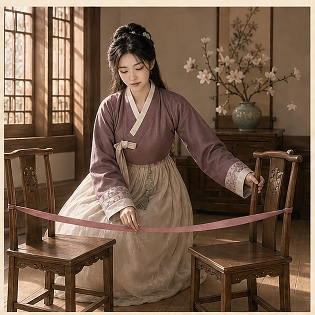

껑
꺼봉이가 봐주는 사주
가입 없이 바로 · 정보 저장 안 함
태어난 날을 알려주면 네 얘기부터 시작할게
어떤 이야기가
제일 궁금해?
처음이면 전체 사주부터, 고민이 뚜렷하면 하나만 골라봐.
어려운 말 빼고
네 얘기만 할게.
처음이면 여기
전체 사주
내 성격부터 연애·일·돈까지 한 번에
→
두 사람 생일 필요
두 사람 궁합
왜 끌리고, 어디서 자꾸 부딪히는지
→
일이 답답할 때
직장·이직
지금 회사가 맞는지, 옮겨도 될지
→
연애가 궁금할 때
연애운
내 매력과 잘 맞는 사람, 다음 만남

→
돈이 궁금할 때
재물운
돈 되는 장점과 자꾸 새는 습관
→
무료
가입 없음
생년월일만 준비
저장하지 않음